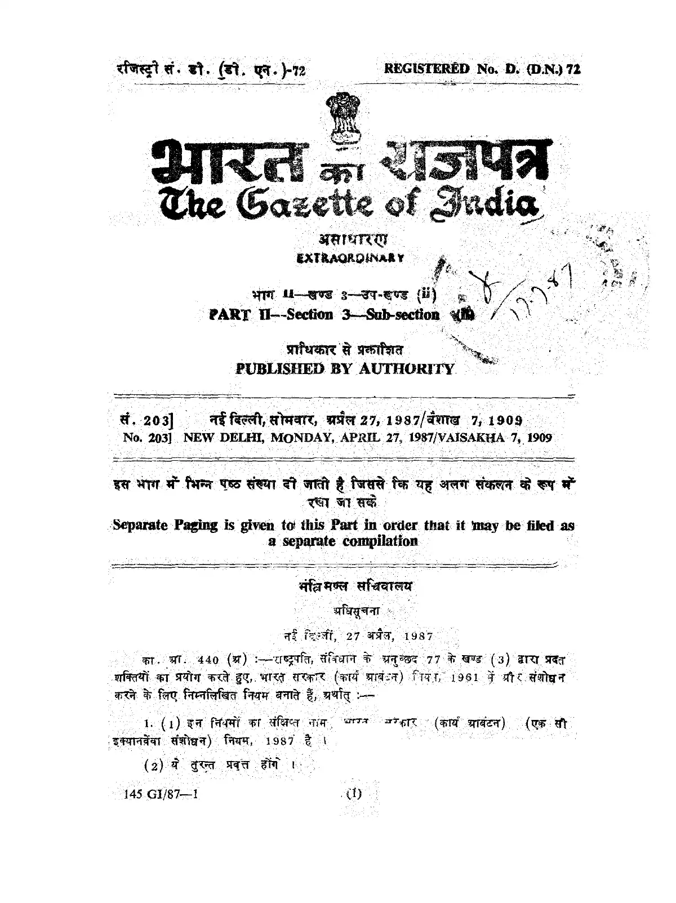
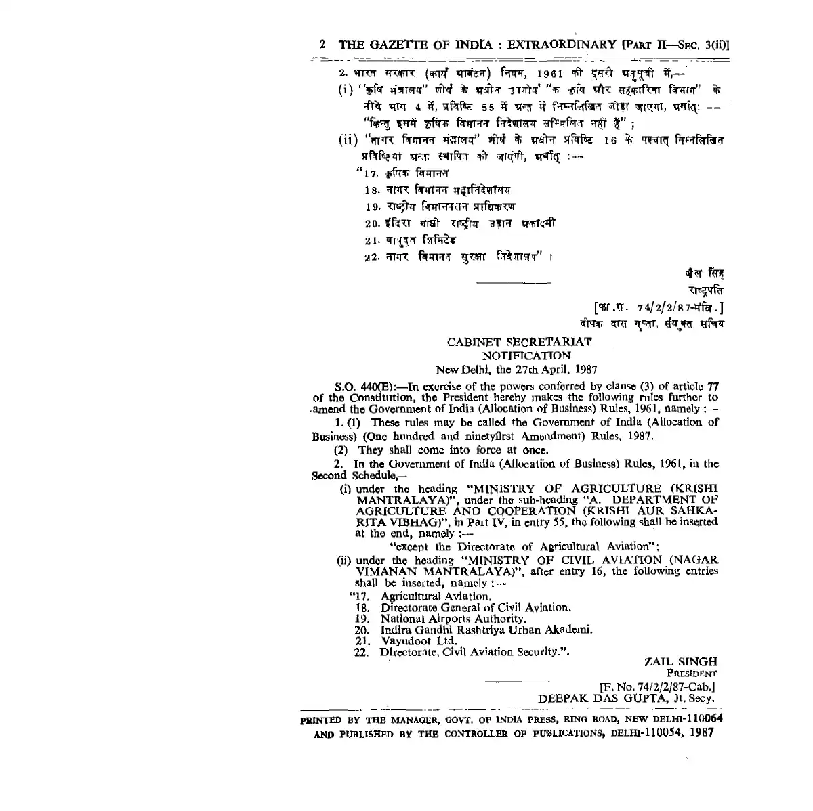

Amendment #191 (S.O. 440(E), 1987)
2 changes: 0 to the First Schedule, 2 to the Second Schedule. 2 applied
What it did to the ministries
- grewMinistry of Civil Aviation grows from 16 to 22 subjects change 2 · histories: Civil Aviation and Tourism
The order, page by page
Page 1 of 2

Page 2 of 2

12after Schedule 2 › MINISTRY OF AGRICULTURE › DEPARTMENT OF AGRICULTURE AND COOPERATION › Part IV › entry 55
- cxcept the Directorate of Agricultural Aviation
applied at schedule 2 › ministry MINISTRY OF AGRICULTURE › department A › part IV › entry 55 in the Rules after #191
after Schedule 2 › MINISTRY OF CIVIL AVIATION › entry 16
- 17. Agricultural Aviation.
- 18. Directorate General of Civil Aviation.
- 19. National Airports Authority.
- 20. Indira Gandhi Rashtriya Urban Akademi.
- 21. Vayudoot Ltd.
- 22. Directorate, Civil Aviation Security.
applied at schedule 2 › ministry Ministry of Civil Aviation › entry 17 in the Rules after #191
How this document was read
From the Government of India (Allocation of Business) Rules, 1961 and their amendments, as published by the Cabinet Secretariat (cabsec.gov.in), read by orgpedia. The readings of the older scanned gazettes have known gaps.